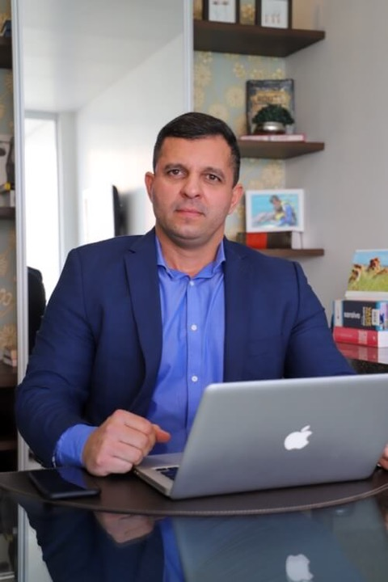

Theldo da Silva Camargos
Advogado especializado em Direito Previdenciário, Civil e Processual Civil
OAB/GO 22.092Aposentadoria, auxílio-doença, BPC/LOAS, pensão por morte e também causas trabalhistas e cíveis. Conte o seu caso pelo WhatsApp e receba a orientação da nossa equipe.
Toque em uma opção e a conversa abre direto no seu WhatsApp.
Cada caso tem particularidades. Toque no tema e envie a sua dúvida — a conversa já começa no assunto certo.
Urbana, rural e programada. Analisamos o seu histórico de contribuições para identificar a regra mais vantajosa.
Falar sobre issoBenefício negado, suspenso ou cortado pelo INSS? Avaliamos laudos, perícias e o histórico do seu pedido.
Falar sobre issoUm salário mínimo mensal para idosos a partir de 65 anos e pessoas com deficiência, inclusive autismo, em situação de baixa renda.
Falar sobre issoOrientação aos dependentes do segurado falecido sobre requisitos, documentos e prazos do pedido.
Falar sobre issoEstudo do seu histórico para saber quando e como se aposentar com o melhor benefício possível.
Falar sobre isso TrabalhistaAtuamos na defesa do empregador e nas demandas dos empregados, com cálculo das verbas trabalhistas.
Falar sobre isso CivilReparação de danos materiais e morais, na esfera judicial ou extrajudicial.
Falar sobre issoConte a sua situação. A equipe avalia e indica o melhor caminho.
Conversar agoraVocê não precisa entender de leis para começar. A gente explica cada etapa.
Toque no botão e conte, com as suas palavras, o que está acontecendo.
A equipe indica o que é necessário — carta do INSS, CNIS, laudos, carteira de trabalho.
Analisamos o seu caso e explicamos com clareza os caminhos possíveis e os próximos passos.
Nossa missãoPromover a justiça por meio das melhores soluções jurídicas, com ética, comprometimento e responsabilidade social.
Olhamos o seu caso por inteiro, não só o pedido do momento.
Mais de 10 anos de prática na advocacia.
Empenho e comunicação clara durante todo o processo.
Construída com ética e profissionalismo.
Advogados inscritos na OAB/GO, em constante atualização para entregar mais aos nossos clientes.

Advogado especializado em Direito Previdenciário, Civil e Processual Civil
OAB/GO 22.092Advogada especializada em Direito Tributário
OAB/GO 47.316Advogada e conciliadora judicial
OAB/GO 58.331É possível recorrer administrativamente ao Conselho de Recursos da Previdência Social — em regra, no prazo de 30 dias contados da ciência da decisão — ou buscar a via judicial. Guarde a carta de indeferimento e os documentos do pedido: eles são o ponto de partida da análise.
Idosos com 65 anos ou mais e pessoas com deficiência de qualquer idade — inclusive pessoas com autismo — cuja família tenha renda mensal de até 1/4 do salário mínimo por pessoa. A inscrição no CadÚnico é obrigatória, e o critério de renda pode ser analisado caso a caso.
Documento de identidade, CPF, comprovante de residência, carteira de trabalho e o extrato do CNIS, que você baixa no Meu INSS. Em casos de doença ou deficiência, separe também laudos e exames médicos. Pelo WhatsApp a equipe indica o que é necessário para o seu caso.
É um estudo do seu histórico de contribuições que mostra quanto tempo falta, qual regra de aposentadoria se aplica e qual o melhor momento para pedir o benefício. Serve tanto para quem está perto de se aposentar quanto para quem quer se organizar com antecedência.
São sete endereços: Goiânia (sede), Quirinópolis, Cidade de Goiás, Paranaiguara, Itapirapuã e Matrinchã, em Goiás, e Barra do Garças, em Mato Grosso. Os endereços e telefones de cada unidade estão no fim desta página.

O que é a pensão por morte? A pensão por morte é um benefício previdenciário pago pelo INSS aos dependentes do segurado que faleceu. Trata-se de uma proteção fundamental…
Ler artigo
Benefício para autistas e sua importância social O benefício para autistas, também conhecido como Benefício de Prestação Continuada (BPC/LOAS), é uma garantia…
Ler artigo
O que são os benefícios por incapacidade? Os benefícios por incapacidade são direitos garantidos aos segurados que, por motivo de saúde, não conseguem desempenhar suas…
Ler artigoConte o seu caso pelo WhatsApp. A equipe da Camargos & Camargos analisa a sua situação e explica os próximos passos.